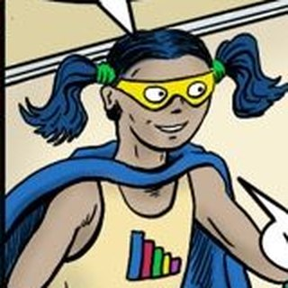

Game
“To Reject or Not Reject” – The Hypothesis Test Conclusion Game
Read the claim, decide whether the test is left-tailed, right-tailed or two-tailed, then choose the conclusion that best interprets the decision. Get both parts right to win the round, and 5 rounds in a row to win the game.
Is this a left-tailed, right-tailed or two-tailed test?
How is this best interpreted?
Streak 0 of 5
Rounds won 0 of 0
Best streak 0

Congratulations! You are now a master at interpreting hypothesis tests!